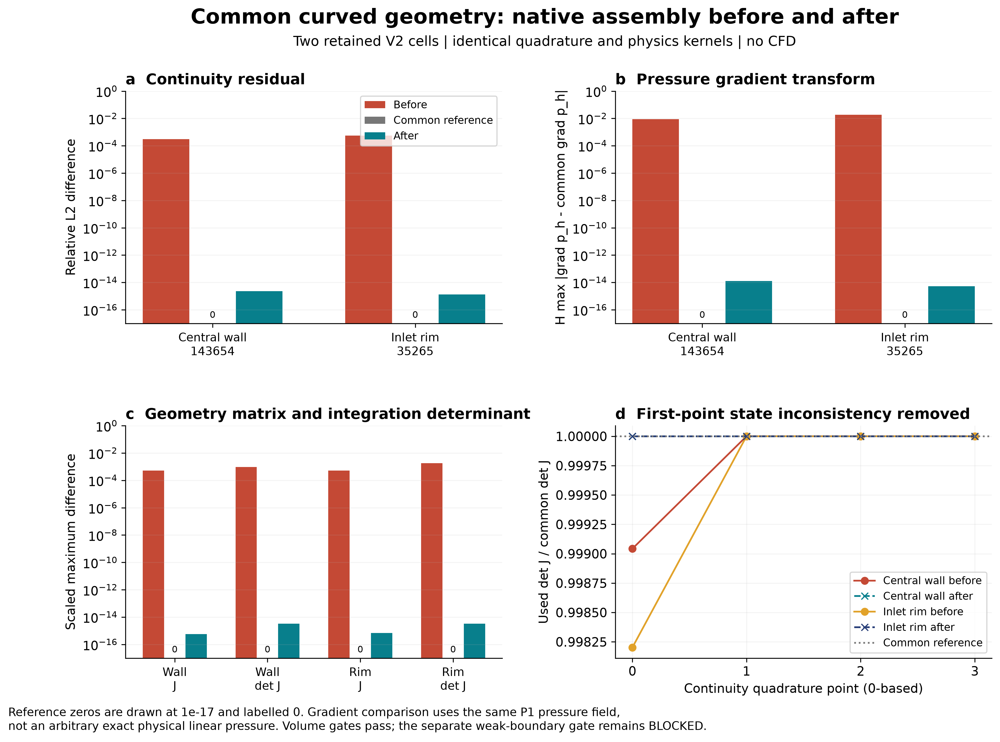
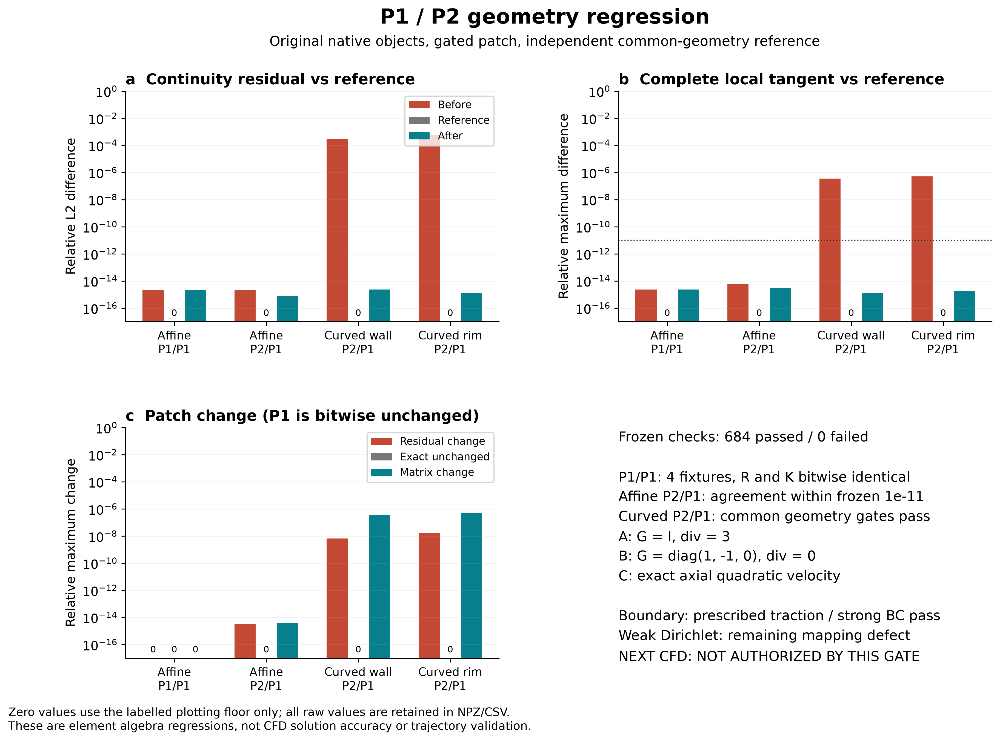
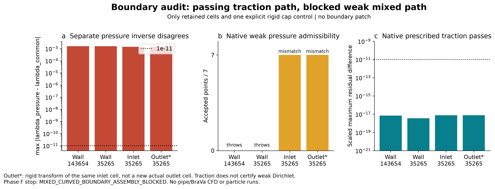

体装配通过；弱 Dirichlet 边界阻断。COMMON_GEOMETRY_FIX_NOT_EVALUABLE。没有新 CFD 或粒子计算。
完整中文报告 · 源码根因 · 独立验证补丁 · 结果身份 · 执行记录
同一参考压力场、同一积分规则的单元装配对照；不是实际CFD误差。


强边界/牵引通过；弱边界压力采用独立角点反解，发生映射错误或原生异常。按Phase F停止。

图件均300dpi。体装配CSV · 完整体装配NPZ · 边界NPZ · 全部测试与失败gate